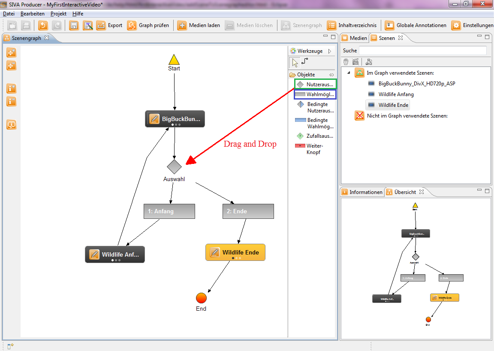

Now you cut the videos into scenes, now it is time to insert them in the scene graph editor.
Next we will finish the scene graph with the scenes. Therefore you drag the two left scenes per drag and drop into the scene graph editor. After that you drag the user selection (green) and two options (blue) into the editor. Now link the first scene with the user selection and the user selection with the two options. Link the first option with the third scene and the second option with the fourth one. Finally link the third scene with the start scene and the fourth scene with the end node. For comparison have a look at the picture below.
Now the scene graph is created. In the next section we will show you how to add annotations to a scene. Therefor, please click on the next menu item "Adding scene annotations" in the help index on the left side or you click onto the following link: Adding scene annotations